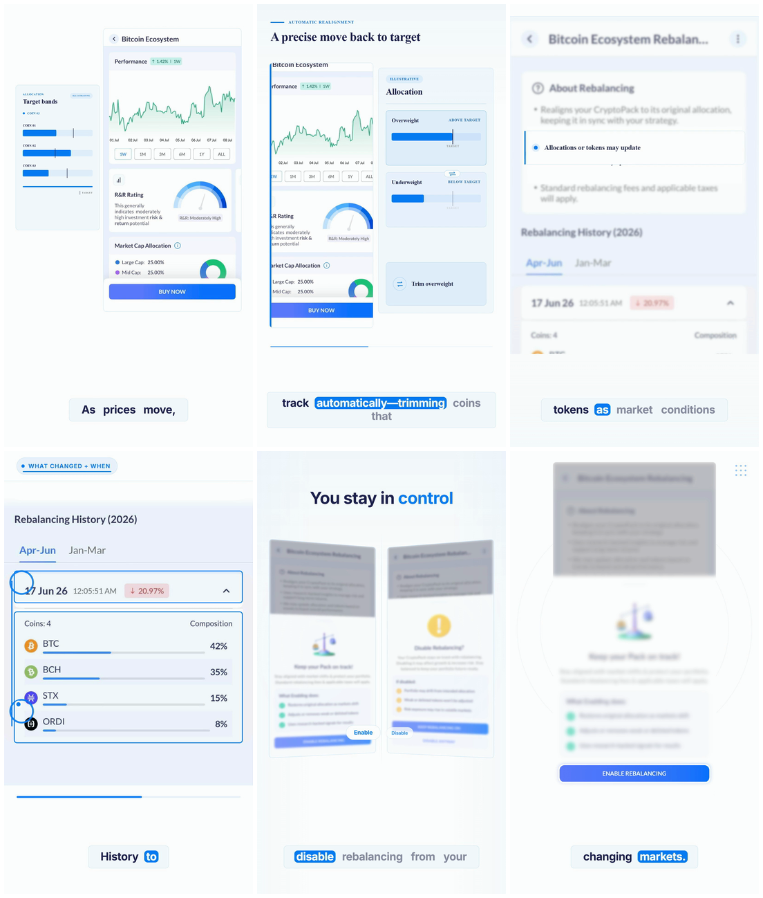

Case study · In-app marketing
How we made CryptoPack Rebalancing
A screenshot-led, motion-designed product film that makes portfolio drift and rebalancing feel simple, transparent, and controllable.
46.6sfinal runtime
6visual beats
9:16vertical master
